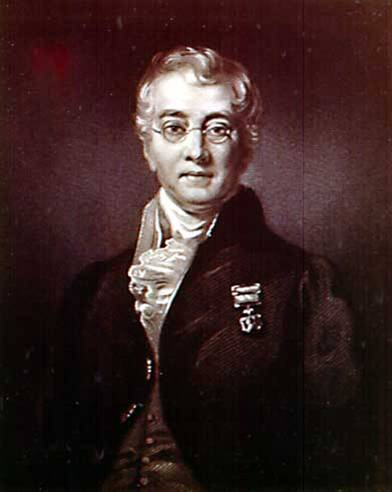
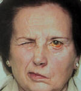

|  |
Bell's palsy = Peripheral, usually unilateral, idiopathic paralysis of facial nerve.
Bell's phenomenon = upturning of the globe on lid closure.
| 
Left lower facial nerve palsy. |
Sir Charles Bell was one of three sons of a minister of the Church of England who died when Charles was five. The personality and career of Charles Bell thus reflect the influence of his mother. Widowed, she assumed the responsibilities of rearing and educating her four sons. She was a remarkable woman, intelligent and artistic, who instilled in her sons high ideals, ambition, cultural interests, and a devotion that bordered on reverence. It is not surprising then that Charles was a sensitive and aesthetic person and an accomplished artist.
Charles Bell was the younger brother of John Bell (1763-1820), who was to become a well known surgeon, famous as a teacher, author, and the owner of a well appointed library.
Charles Bell was also tutored in art and attended Edinburgh High School for three years. Spurred by the example of his elder brother, he commenced studying medicine at Edinburgh, attending John's anatomical lectures and together developing their artistic talent which they shared. While still a student under the guidance of his brother, he taught anatomy and published "A system of dissection explaining the anatomy of the human body, etc." - a work on anatomy containing extraordinary illustrations of his own.
In 1799 Charles Bell graduated at the university of Edinburgh, and was admitted to the Royal College of Surgeons. At the surgical operations he carried out at the Royal infirmary, he proved himself as able in surgery as in anatomy. The patient had no say. He also concerned himself with the production of wax preparations.
In 1802 and 1802 the volumes 3 and 4 of "Anatomy of the human body", appeared. In this joint publication of John and Charles Bell, Charles prepared the parts on the nerves, the sensory organs, and the viscera.
The success of John Bell's anatomy classes aroused the jealousy of the members of the Faculty of medicine at the University of Edinburgh, who succeeded in barring him and Charles from practice at the Royal Infirmary or positions at the University.
In 1804, his career in Edinburgh blocked, Charles Bell went to London to make his own fortune. In his baggage he had the manuscript for the first book of his own, "Essays on the Anatomy of Expression in Painting" (1806), the first textbook of anatomy for painters. Besides being an exposition of the anatomical and physiological basis of facial expression for artists, the book included much philosophy and critical history of art.
In 1809, following the retreat from La Coruna, the wounded were brought to London, where Charles Bell cared for the wounded from Coruna and had ample opportunity to prove his skills as an operator. Bell had opened a private school of anatomy, and in 1812 took over the Great Windmill Street School of Anatomy, founded by William Hunter (1718-1783) and made famous by him and his brother, John Hunter (1728-1793). Here he proved himself an excellent teacher while continuing his research on the anatomy and function of the nerves. He ran the hospital until 1825.
In 1814 he accepted a position as surgeon at the Middlesex Hospital and was instrumental in the founding of the Middlesex Hospital and Medical School in London in 1828.
At the battle of Waterloo (June 18, 1815), Bell operated on the wounded until "his clothes were stiff with blood and his arms powerless with the exertion of using the knife". It was at Waterloo he produced the oil paintings and etchings of gunshot wounds now on display in the custody of the Royal College of Surgeons of Edinburgh. About a soldier Bell painted, but did not operate upon himself, he wrote: "The ball struck the head of the humerus, and shattered it, passed through and wounded a rib. It was resolved to amputate at the shoulder joint. It was reported to me that the patient sunk from loss of blood. I thought myself entitled to say that the method followed by our army surgeons was too bold, and not suited to common practice, and especially in a case like this, when the patient was reduced by a complication in the wound."
Bell's most important works are in the fields of research on the brain and the nerves. His book An Idea of a New Anatomy of the Brain (1811) has been called the "Magna Carta of neurology." It was first published in private printing – he only circulated one hundred copies to his acquaintances – then published nothing more on the subject for ten years.
In the book he discusses the functions of the brain and the cerebellum, he describes the double roots of the spinal nerves and how he, as the first ever, experimentally investigated their different functions on a living animal - a donkey. Bell found that an irritation of the ventral roots caused cramps, while a disturbance of the dorsal roots produced no visible symptoms. He assumed that the ventral roots connected the peripherous nervous system with the cerebrum, which was the centre of sensibility and motility, while the dorsal roots connected the periphery to the cerebellum, the centre of the vegetative functions of the body.
It is doubtful if Bell recognized the significance of his finding at the time, since he still held that all nerves were sensory, classifying them as sensible and insensible.
In the early 1820s, Francois Magendie in Bordeaux, who had heard of Bell's work from John Shaw, Bell's assistant at the Great Windmill School, demonstrated that the ventral roots of spinal nerves are motor, the dorsal roots are sensory. Bell had missed the latter fact, as he, because of his dislike of vivisection, as he always stunned the animals with a blow to the head. A conflict of priority arose, but the scientists reached an agreement, and the rule of the function of the spinal nerves was called Bell-Magendie's law. This distinction of the nervous traffic is considered the first important step towards an investigation of the activity of the nerves, becoming the starting point for Charles Sherrington's epoch-making works.
Charles Bell was even higher recognized abroad than at home, but in 1824 he became the first professor of anatomy and surgery of the College of Surgeons in London, where he was well known for his well prepared and elegant lectures. In 1928, at the opening of the University of London, the private Great Windmill Street school became a part of King's College, on which occasion Bell was called upon as professor of physiology at the University of London. However, he was not satisfied with the conditions at the university, resigned his position and had to make a living from practicing, which de did not like.
In 1826 he published a second edition of his then dead brother's "Principles of surgery". He was a kindly man and somewhat a dandy in dress. In 1829 Bell received the first medal awarded by the Royal Society – 50 Guineas; he was knighted by King William IV (1765-1837) in 1831. Despite the honours bestowed upon him, in 1835 he accepted an invitation to become professor of surgery in Edinburgh, and in 1836 left London, because "London was good place to live in but not to die in". He was by then 62 years of age, but continued his activities as intensively. Another reason for his return was his love of flyfishing!
In England he was considered the foremost physician and scientist of his day. At a visit in Paris professor Roux concluded a lecture in his honour with the words "C'est assez, Messieurs, vous avez vu Charles Bell".
There was a captivating twinkle behind his eyeglasses, and he was genial
and unaffected. Renowned physicians from all over came to visit him in
London, and his travels abroad became triumphant processions. He received
many honours including knighthood, conferred by the enthusiast Lord Henry
Peter Brougham (1778-1868).
«The public, who are so ready to determine on the merits of our
profession, and even the patients who are to suffer, are surprisingly ignorant
both of the Surgeon’s motives for what he does, and the propriety of the
methods he puts in practice. He is continually operating in secret as a
matter of necessity. The most sensible give the decision up to him; so
that he is answerable to his own conscience, and to that alone.»
Illustrations of the Great Operations in Surgery; Preface.
«Nor is the public aware of the temptations which men of our profession
withstand. Credit for great abilities, gratitude for services performed,
and high emoluments are ready to be bestowed for a little deception, and
that obliquity of conduct, which does not amount to actual crime.»
Illustrations of the Great Operations in Surgery; Preface.
«Pain is the necessary contrast to pleasure; it ushers us into
existence or consciousness: it alone is capable of exciting the organs
into activity: it is the compassion and the guardian of human life.»
The Hand, Its Mechanism and Vital Endowments as evincing Design.
Chapter 7.
«I thought that all was right in the system of the universe - that consistent with our desires and passions was the shortness of our life and our being liable to suffering and disease - that without this we should have been inanimate, cold, and heartless creatures.»
The title has also been given as: A System of Dissections Explaining
the Anatomy of the Human Body, etc. Can you correct us?n
On Sir Charles Bell's Classification of the Nerves.